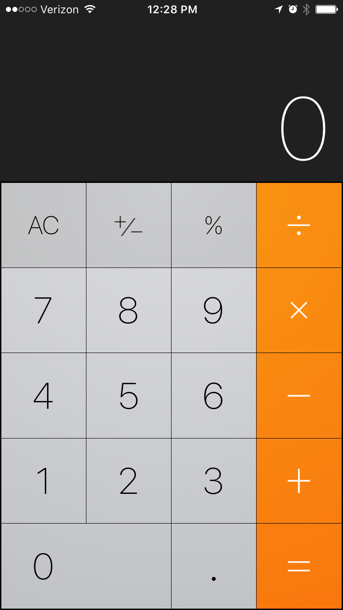
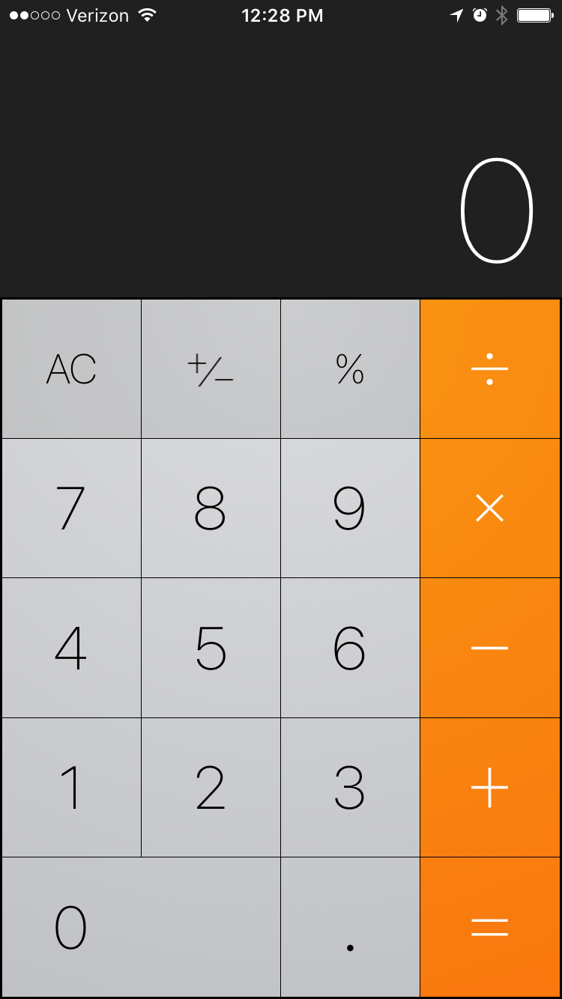

Most people do know when their birthdays are,but some might not know what day of the week they were born.
Luckily for us, there are ways to calculate the day of the week from a specific date.
This website has go a calendar that will assist you to know the day that you were born as long as
you simple remember the month,date and the year that your were born. The day you were BORN will be displayed
in
Akan names are derived from Ghanian culture. Frequently in Ghana, children are given their first name as
a day name' which corresponds to the day in the week they were born.
 TAP HERE!!!

TAP HERE!!!
